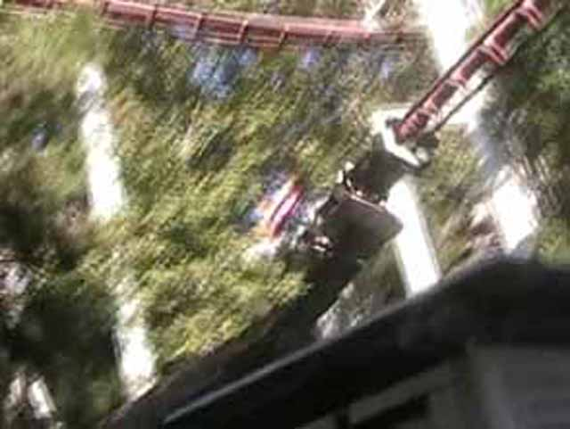
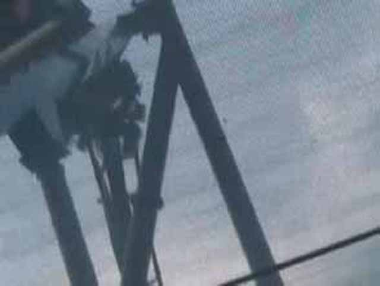
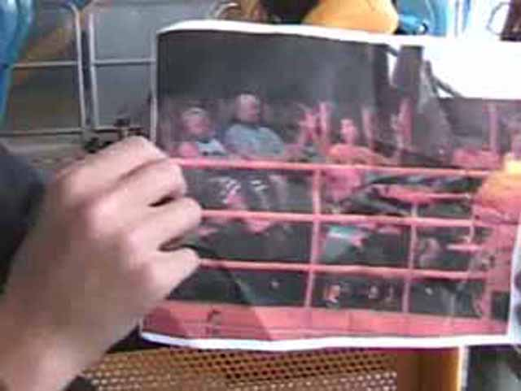
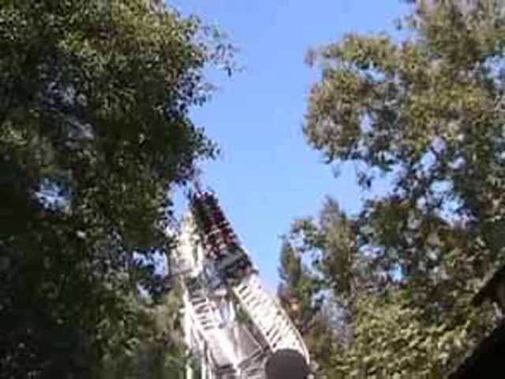
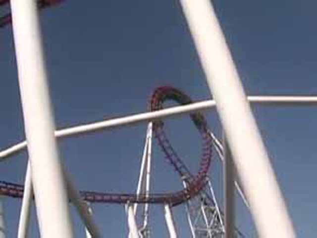
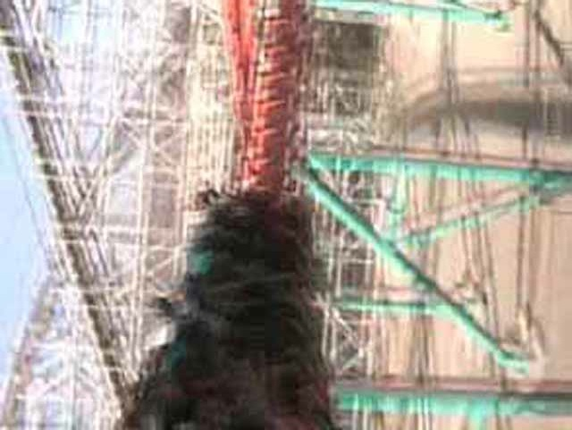
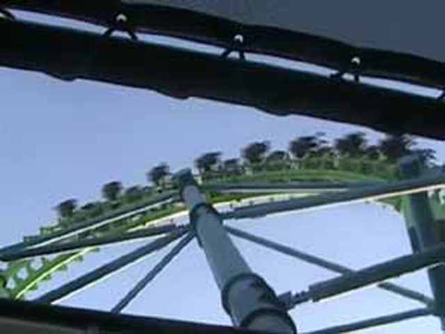
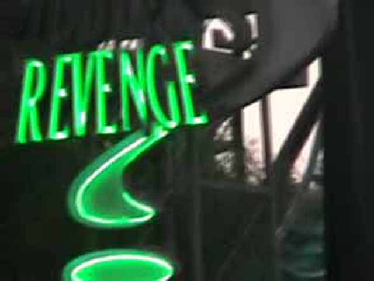
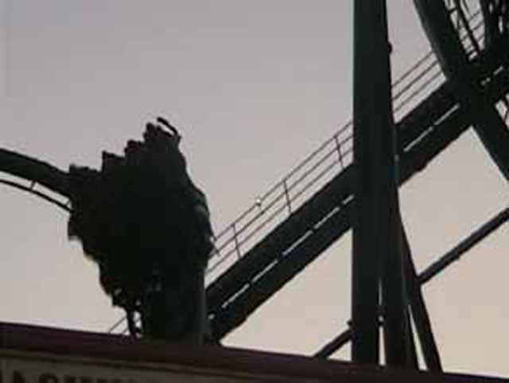
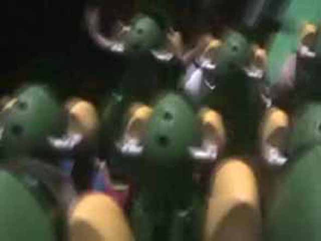

TPR Summer Party
Today was this years TPR meet. Cody decided to bring TPR Member Golfie with him so he can enjoy the rides as well.
 Here, you can see Ryan dacning. He's got nothing better to do.
Here, you can see Ryan dacning. He's got nothing better to do.
 We ran to Tatsu where the line grew from 2 min to 2 hrs. We got on because we actually ran. We're all better than you.
We ran to Tatsu where the line grew from 2 min to 2 hrs. We got on because we actually ran. We're all better than you.
 Tatsu was crazy sand Golfie survived!
Tatsu was crazy sand Golfie survived!
 Next up was DejaVu.
Next up was DejaVu.
After Tatsu, Golfie was ready to ride DejaVu.
HOLY CRAP!!! IT'S A CREDIT!!!!!
Golfie wants more rides.
 How does Iron Wolf compare to Riddlers!
How does Iron Wolf compare to Riddlers!
Stupid SBNO Freefall.
Hey Robb, Pound it!
I'm stupid and I know it.
 From this photo, you can tell it was really crowded today.
From this photo, you can tell it was really crowded today.
HELP!!! I'M BEING TACKLED!!!!!
I'm Golfie! I'm in line for Superman! I'm a peice of paper! Gimme some candy!
This the proper way to board Superman.
And here on TPR, We always follow the rules that are written on automatic doors.
S for Super Dissapointment.
Golfie in the skytower.
Oh S**t! Why won't he ever stop tackling me!!!!!
Riddlers Revenge Estopped while in Sky Tower.
We jinxed all the rides with our stupidity!

Ninja was fun.
Dude! Pound it!

We all like Scream.

Golfie is happy because Codys taking him on more rides!
Wait a min. Why am I doing this!
 Collosus gets rougher everyday.
Collosus gets rougher everyday.

Revolution also gets rougher everyday. Way to turn really good coasters into really crappy coasters Six Flags.
Golfie now hungry!!

Yay! Painful Arrow Rides!!
 Viper will destroy you with Headbanging!
Viper will destroy you with Headbanging!
We are splashing you because we are better than you. We could kick your ass with these water guns!
 We then went over to Goliath.
We then went over to Goliath.
 Goliath is one twisted sick coaster.
Goliath is one twisted sick coaster.

DEATH HELIX!!!!!!!!.
 These people are happy because they think they can fly.
These people are happy because they think they can fly.

Why don't other Six Flags Rides have a Single riders line!
 Yummy Vekoma Goodness!!!!!!!!!
Yummy Vekoma Goodness!!!!!!!!!
Why is the last car on Goldrusher closed?!?
This is what its like to ride goldrusher sideways.

Lets all go ride Revenge!
 Loopy Goodness.
Loopy Goodness.

Yay! Airtime.

Riddlers is fun at night.
 Inclined Loops are the best!
Inclined Loops are the best!
And we'll end this update with this sign behind Riddlers Gas Station.
Home